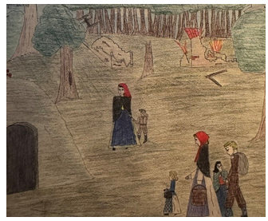

| Eén van de slachtoffers die het met eigen ogen heeft meegemaakt is Mia. Mia was 12 jaar toen haar huis op 6 december 1942 werd gebombardeerd door RAF-vliegtuigen. | ||
 |
De afstand tussen de Philipsfabrieken en de plek waar wij woonden was maar 3 kilometer. Toen de Engelse vliegtuigen over kwamen vliegen, gingen mijn vader, moeder, twee broertjes en ik kijken wat er buiten gebeurde. Toen het bombardement los barstte, vluchtte mijn twee broertjes en ik huis. De Engelse bombardeerde niet met gewone bommen maar met speciale bommen. Er zat namelijk fosfor in wat niet goed valt te blussen en ernstige brandwonden achterlaat. De fosforbommen beschadigde ons huis, hierdoor stortte het dak in en zaten wij 6 uur lang onder het puin. De schade was enorm. Ons huis was zwaar beschadigd. Vooral ons gezin liep enorme schade op. Mijn broertje overleefde het bombardement niet. Hij is levend verbrand door de fosforbommen. Mijn andere broertje is zwaar gewond geraakt aan zijn gezicht. Zelf hebben mijn benen brandwonden opgelopen. Ik werd gelijk behandeld in het ziekenhuis en de doctoren wisten niet hoe ze met fosfor moesten behandelen. Ze vroegen advies aan Duitse hulpverleners en zij kwamen met de oplossing deca-water. Tijdens mijn genezingsproces kwamen de doctoren met de gedachte van dat mijn benen geamputeerd zouden moeten worden. Later bleek dat ik beide benen mocht behouden. De oorlog en de herinneringen blijven altijd bij me. Ik kan dit nooit vergeten. Als ik bombardementen in andere landen zie, dan is het net of ik het zelf weer meemaak. | |
|

×
Op de tekening zie je mijn moeder, broer en zusjes Eindhoven ontvluchten. We verbleven in een paardenstal. Op een moment kwam er een jonge Duitse militair aanlopen. Door de heftige bom inslagen vroeg hij of om onderdak. Mijn moeder stemde toe, mits hij zijn wapen afdeed en in de melkkamer ging slapen. Bij vertrek van de Duitse militair kreeg hij een boterham met kaas mee. |
|